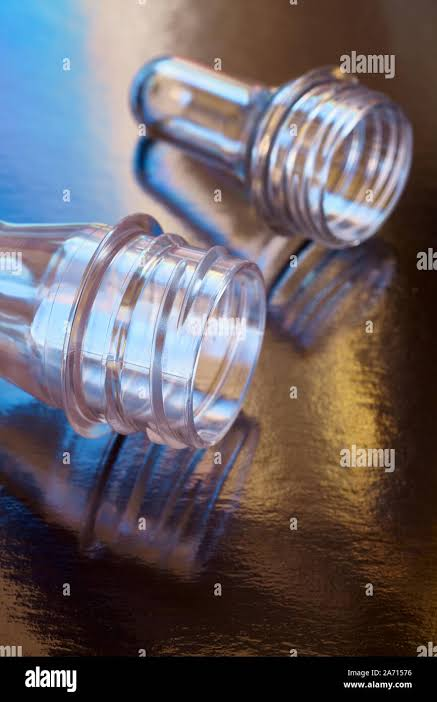

Quality & Testing
Rigorous testing procedures ensuring premium quality at every stage
Our Quality Commitment
At Ciplon Plasto, quality is not just a process—it's our core commitment. Every preform undergoes rigorous testing to ensure consistency, durability, and performance that meets and exceeds industry standards.
We focus on material quality, finish consistency, weight control, and performance reliability so every preform aligns with your production goals and customer expectations.
- ✓ Strict dimensional and visual inspection
- ✓ Advanced process control for stable output
- ✓ Customized material and finish guidance
- ✓ Dependable supply for growing packaging demands

Testing Parameters
Our quality process combines incoming material checks, in-process monitoring, and finished-preform inspection so issues are identified early and documented clearly.
Dimensional Testing
Precise measurement of length, diameter, weight, and wall thickness using advanced calibrated instruments to ensure consistency.
Visual Inspection
Comprehensive checking for defects, cracks, discoloration, and surface irregularities under controlled lighting conditions.
Material Testing
Analysis of PET material properties including crystallinity, melting point, and purity to ensure food-grade quality standards.
Pressure Testing
Simulated stress testing to verify bottle integrity and performance under carbonation and thermal conditions.
Transparency Check
Verification of optical clarity and transparency to ensure superior product visibility for consumer appeal.
Performance Analysis
End-to-end testing to ensure compatibility with blow-molding equipment and final packaging requirements.
Quality that protects your next production step.
A preform is the first stage of your bottle, so consistency matters long before filling and labeling. We focus on the details that support smooth blowing, reliable sealing, clear appearance, and fewer avoidable interruptions on your line.
Certifications & Standards
ISO 9001:2015
International Quality Management System certification ensuring consistent quality and continuous improvement.
Food Grade Material
FDA & FSSAI approved food-safe PET formulations suitable for direct contact with consumable products.
International Standards
Compliance with global packaging standards and export-ready certifications for international markets.
Testing Equipment
Our laboratory is equipped with state-of-the-art testing instruments
Digital Caliper
Precise dimension measurement
Weight Scale
Precision weight verification
Visual Inspector
Defect detection system
Pressure Tester
Bottle strength analysis